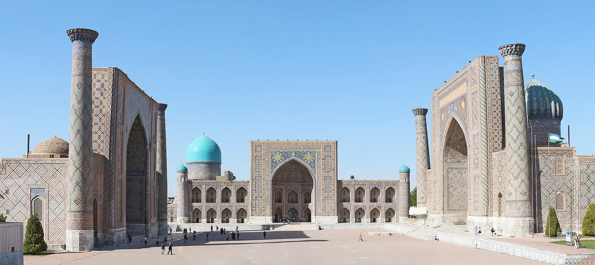

The Largest Chess Olympiad in History in Samarkand: 400 Teams, 1,980 Players
The 46th Chess Olympiad will be held in Samarkand from Sept. 15 to 27. According to FIDE, the number of participating teams is 20 more than the 2024 record in Budapest. Uzbekistan's men's team starts as the third seed.

The 46th Chess Olympiad, organized by the International Chess Federation (FIDE), will take place in Samarkand from Sept. 15 to Sept. 27, 2026. The opening ceremony is set for Sept. 15 and the final round for Sept. 27.
According to FIDE, 400 teams will take part: 208 in the open tournament and 192 in the women's tournament. This is the highest figure in the history of the Olympiad.
The previous record was set in Budapest in 2024, when 380 teams competed. The Samarkand tournament thus becomes the largest chess Olympiad in history.
By the numbers
- Olympiad number: 46th
- Dates: Sept. 15–27, 2026
- City: Samarkand, Uzbekistan
- Total teams: 400 (a record)
- Open tournament: 208 teams
- Women's tournament: 192 teams
- Expected participants: 1,980
- In the open tournament: 1,032 players
- In the women's tournament: 948 players
- Previous record: 380 teams (Budapest, 2024)
According to the organizers, the total number of participants is expected to reach 1,980 — 1,032 players in the open tournament and 948 in the women's tournament.
The favorites
In the open tournament, the U.S. team starts as the top seed; its lineup includes Fabiano Caruana. India enters the competition as the champion of the 2024 Budapest Olympiad. China and Germany are also among the main contenders.
Uzbekistan's men's team is seeded third overall. The hosts are taking part in the Olympiad with three teams.
In the women's tournament, India is the defending champion. The teams of Georgia, China, Kazakhstan and the United States are also counted among the contenders for medals.
Uzbekistan's lineup
One of the leaders of Uzbekistan's main men's team is 20-year-old Javokhir Sindarov. His rating stands at 2,778 points — the second-highest figure among the Olympiad's participants.
The team also includes 21-year-old Nodirbek Abdusattorov. The question of who will play on the first board was not announced before the opening.
The decision has already been made, but it has not yet been announced.
— Rustam Kasimdzhanov, captain of Uzbekistan's men's national team (from Gazeta.uz translation, 14.09.2026)
Uzbekistan's first women's team is seeded 13th. The team includes Afruza Khamdamova, Gulrukhbegim Tokhirjonova and Umida Omonova.
Every team is thinking about medals.
— Nafisa Muminova, captain of Uzbekistan's women's national team (from Gazeta.uz translation, 14.09.2026)
Sindarov's achievement
On the eve of the Olympiad, Javokhir Sindarov was named the best player on the first board at the conclusion of the Global Chess League tournament. He finished ahead of Magnus Carlsen on this measure.
With a rating of 2,778, Sindarov is among the highest-rated players in Uzbekistan's history. He earned the international grandmaster title in 2018 at the age of 12 years and 10 months.
Uzbek chess in recent years
Uzbekistan's men's national team won gold at the 44th Chess Olympiad, held in Chennai, India, in 2022. The core lineup of that team forms the nucleus of the current national squad.
In 2023, Nodirbek Abdusattorov won the World Rapid Championship; in 2021 he had become the youngest champion at the World Rapid Championship. Uzbek players have consistently posted strong results in international tournaments in recent years.
Samarkand as host
Samarkand has hosted a series of major international events in recent years. The SCO summit was held in the city in 2022, and the General Assembly of the UN World Tourism Organization took place there in 2023. In May 2026, the Asian Development Bank's financing partnership fund for critical minerals was formally launched in the city.
The Chess Olympiad is held every two years and is FIDE's largest team competition. Each country competes with one team; the host country has the right to enter additional teams.
Format and rules
The Olympiad is played over 11 rounds under the Swiss system. Each team plays on four boards; team points are awarded for a win. Additional tiebreak criteria are applied in the event of a tie.
The open tournament and the women's tournament are held separately; women players may also compete in the open tournament.
Context
How the Olympiad is played
The Chess Olympiad is played over 11 rounds under the Swiss system. Each team plays on four boards and has one reserve player. In each round, teams are paired with opponents on similar point totals.
Team points are awarded for a win; in the event of a tie, additional criteria are applied — including the sum of results on the individual boards. The open tournament and the women's tournament are held separately; women players may also compete in the open tournament.
The competition is organized by FIDE, the International Chess Federation, and is held every two years. Each country competes with one team; the host country has the right to enter additional teams. Uzbekistan is therefore taking part with three teams in the open section.
The seeding of participating teams
In the open tournament, the U.S. team starts as the top seed; its lineup includes Fabiano Caruana. India enters the competition as the champion of the 2024 Budapest Olympiad. China and Germany are also among the main contenders.
Uzbekistan's main men's team is seeded third overall. In the women's tournament, India is the defending champion; the teams of Georgia, China, Kazakhstan and the United States are also counted among the contenders for medals.
The rise of Uzbek chess
Uzbekistan's men's national team won gold at the 44th Chess Olympiad, held in Chennai, India, in 2022. The core lineup of that team forms the nucleus of the current national squad.
Nodirbek Abdusattorov became the youngest champion at the World Rapid Championship in 2021. Javokhir Sindarov earned the international grandmaster title in 2018 at the age of 12 years and 10 months; that mark placed him on the list of the youngest grandmasters in chess history.
On the eve of the Olympiad, Sindarov was named the best player on the first board at the conclusion of the Global Chess League tournament, finishing ahead of Magnus Carlsen on this measure.
Samarkand as host
Samarkand has hosted a series of major international events in recent years. The Shanghai Cooperation Organization summit was held in the city in 2022; the General Assembly of the UN World Tourism Organization took place there in 2023.
In May 2026, the Asian Development Bank's partnership fund for financing production from critical minerals was formally launched in the city.
The Chess Olympiad has been held since 1927. Teams from the former Soviet Union and later Russia dominated for many years; over the past two decades, countries such as India, China, the United States, Armenia and Uzbekistan have come to the fore.
The Chess Olympiad has been held since 1927. Teams from the former Soviet Union and later Russia dominated for many years; over the past two decades, countries such as India, China, the United States, Armenia and Uzbekistan have come to the fore.
The competition's results will be known after Sept. 27. All rounds of the tournament will be broadcast live on FIDE's official platforms.